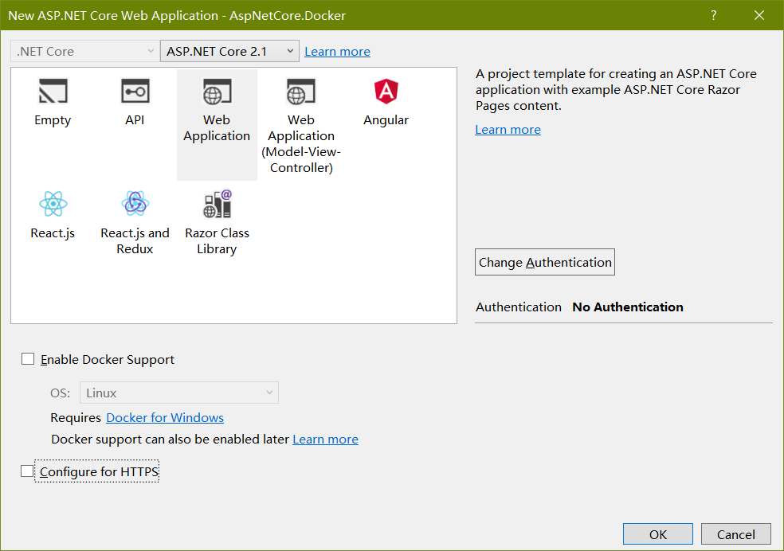
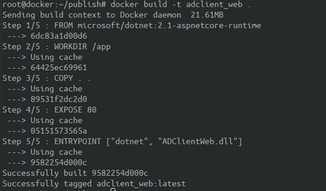
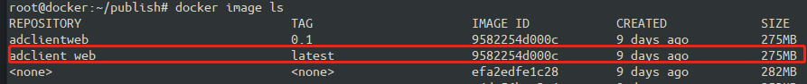
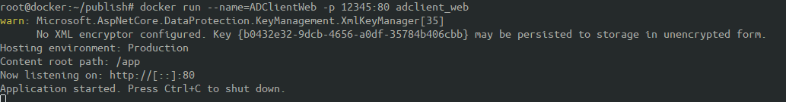

安装Docker
1 | #移除旧版本 |
创建支持Docker运行的Asp.net core应用
在新建项目时，勾选Enable Docker Support，假设项目名称为ADClientWeb

创建Docker镜像
在Docker服务器上新建目录
ADClientWeb，并创建Dockerfile文件1
2
3
4
5FROM microsoft/dotnet:2.1-aspnetcore-runtime
WORKDIR /app
COPY . .
EXPOSE 80
ENTRYPOINT ["dotnet", "ADClientWeb.dll"]拷贝项目编译结果到
ADClientWeb目录下，并在此目录下执行命令1
docker build -t ADClientWeb .
输出：

执行docker image ls可以看到已创建的Docker镜像

运行
执行docker run --name=ADClientWeb -p 8080:80 -d adclient_web 即可。
执行docker run --restart=always --name=ADClientWeb -p 8080:80 -d adclient_web可使镜像在重启机器后自动运行。
输出：
